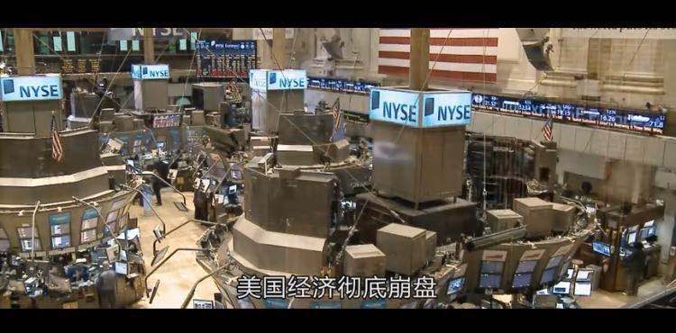

动机
2020新冠疫情的发生造成社会的各种各样持续变化，个人感受到的变化包括但不限于：
所有国人为防疫而在家中坚守两个月甚至更长时间，整个社会按下暂停键；
几百支医疗队伍驰援疫情中心武汉；
医疗资源相关个股比如说口罩概念股涨幅4~5倍；
微盟由于程序员删库，股价一度跌到3.5港币，至今反弹至10港币左右；
疫情全球迅速蔓延，在国内松口气的同时，却没有意识到国外的愈演愈烈；
美股4次熔断，而在熔断后不到两个月的时间，迅速反弹接近新高；
- 熔断期间，全球顶级航空公司波音的市值一度比特斯拉低，500亿美元左右；
- 特斯拉950美元跌到350美元，而后迅速反弹至今1050美元，反弹2倍左右；
- 全球油价迅速暴跌，4月到期期货合约一度跌为负值，而连续合约一度跌到10美元左右；迅速企稳到40美元左右；
种种情况太多太多，可能是因为太穷，所以比较关注疫情对金融以及经济的影响，以及想象着如果人生往后，还能遇到类似的情形，是否能抓住少量的机会，而不是白白的浪费一次危机。然而，又不懂金融，所以就想着了解一些金融的知识。最终决定还是从一些金融周边的书开始了解，在当当下单了《行动的勇气》、《聪明的投资者》。
伯克南
2007~2014年任美联储（相当于中国央行）主席，犹太血统。
哈佛大学经济学学士、麻省理工经济学博士、普林斯顿大学经济系主任。金融危机期间受政治压力与纳税人压力与盖特纳（前财长）等人，力挽狂澜，开创多个举动，救危机于水火。
- 伯克南前任-格里斯翻
- 后任-耶伦
- 现任-杰温.鲍威尔
次贷危机
次贷危机（08年金融危机）本质上是一次参与者（银行、证券公司（贝尔斯通，雷曼，美林、两房、各种投行）、评级机构（标准普尔等不切实际的高评级）、证券投资者（后来恐慌挤兑）、保险公司（为各证券承保）、中介机构（借款申请）、借款者（按揭贷款者））无限乐观或者没有足够风险意识的超额借贷消费行为以及超风险投资破灭行为。

- 2009年遭到查封的房屋210万处
- 失业率飙升至10%
危机的直接诱因是次贷泛滥与房价泡沫，但主要原因是恐慌本身。这与2020新冠危机的恐慌及其相似。
阻止这种情况的一个办法是加强金融监管。
倒闭
危机期间，很多投资银行与保险公司倒闭或者被收购；
比较著名的：贝尔斯登、雷曼兄弟、美林证券、美国国际集团、华盛顿互惠银行、美联银行等；
房利美与房地美受到大量救助；

措施
三次量化宽松：
美联储：为银行注资，收购商业票据，购买房利美、房地美、吉利美等公司次贷证券，购买国债（推高价格，降低收益，间接影响信贷成本），降低联邦基准利率至0附近；
政府：《复苏与再投资法案》政府补助、扩大基建、减税等；
第一轮量化宽松2009年初：
收购三房担保的1.25万亿美元次贷证券，购买两房发现的2000亿美元债券，收购3000亿美元国库券；在2010年3月，美联储持有的各种证券达2万亿美元。
第二轮量化宽松（受欧债危机影响）：
2011年6月前收购6000亿美元国库劵；美联储资产负债表膨胀到2.9万亿美元左右。
第三轮量化宽松：
2012年9月开始每月收购400亿美元证券，2012.12涨到每月850亿美元，并没有设定终止时间；
2014年10月结束量化宽松时，美联储资产负债表有4.5万亿美元；
与2020新冠危机对比
措施对比：
次贷危机三次量化宽松以及零利率,新冠危机一次到位：
- 2.3万亿救助计划，涉及各种企业贷款、居民救助等，包括但不限于大街贷款计划，市政贷款计划等。
- 不限量购买债券，这部分数据暂时还不知道。
- 零利率
恢复对比：
- 次贷危机08年影响一直持续到14年中左右，失业率基本恢复。
- 新冠危机股市迅速恢复，2个月左右。失业率较难快速恢复，GDP较难恢复。完全恢复估计能持续到2022年底左右。
感受
历史和国际经验表明，如果危机期间出现了房地产泡沫破灭现象，那么随后的经济衰退往往会更加严重。
读书过程中最大的感慨是，由次贷危机总结出的救市措施：只要是各种原因导致的恐慌挤兑性的烈度较大的金融下跌，美联储，包括各国央行，一定会迅速实行大量宽松计划，目的是快速救市，拯救金融不至于崩塌，从而达到把经济损失（实体企业倒闭，大量失业）达到最小化。而新冠危机中美联储的表现可以说是教科书式表现：无限购买证券，利率一步到位降至0，贷款计划等措施可谓快速达到了目的。当然在这个过程中也涌现出无数的机会。
在所有的危机当中，都会有两类人：敢于行动者和惧怕行动者。—-伯克南